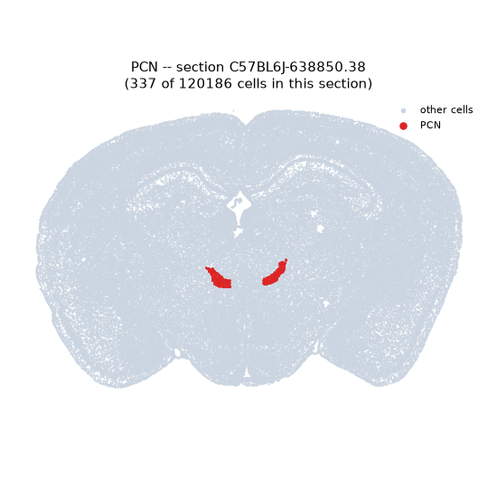
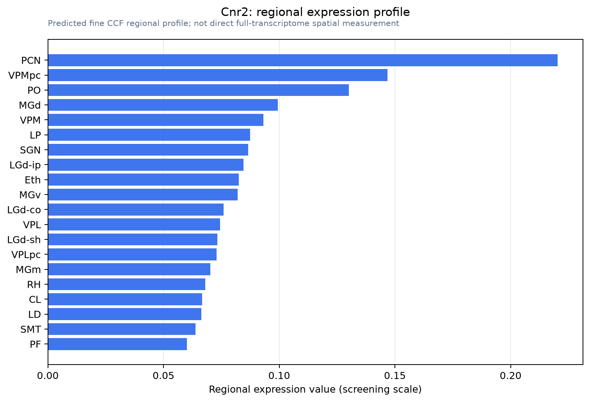

Cnr2
Cannabinoid receptor 2 (CB-2) (CB2) (mCB2)
Spatial tier: RESTRICTED · Class: GPCR · Top region: PCN (Paracentral nucleus) · Positive regions: 20/554
47.6Discovery Score
36.2Targetability Score
CEvidence grade C
What this means: Cnr2: fine CCF profile is restricted toward PCN (top regions: PCN, VPMpc, PO, MGd, VPM; 20 positive regions); direct spatial validation is still required.
Direct spatial evidence
MERFISH REGION LOCATOR

Regional expression figure

Predicted WMB × fine-CCF profile; not direct full-transcriptome spatial measurement.
Spatial profile
Evidence and specificity
- Evidence status
- PREDICTED_FINE
- Direct sources
- None; predicted localization only
- Exclusive threshold
- 12 positive regions out of 554
- Spatial specificity
- 0.349
- Top-region fraction
- 0.088
- Filter status
- PASS
Interpretation limits
- Cell-type-to-region projection is imputed expression, not direct spatial measurement.
- Adult reference atlases do not establish stability across age, sex, strain, state, or disease.
- Transcript abundance does not guarantee protein abundance or genetic-tool performance.